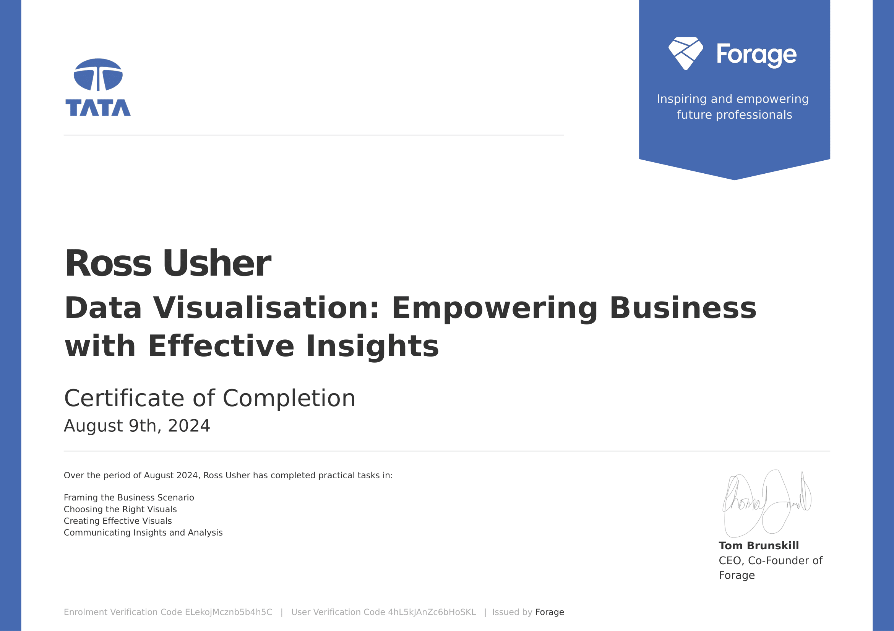

Tata: Empowering Businesses with Effective Insights
This project was completed as part of the Tata: Empwoering Businesses with Effective Insights job simulator provided by Forage. The job simulator is designed to give the participants tasks that simulate the work of a data scientist at Tata. The simulator gave me valuable experience to transfer into my career and allowed me to demonstrate my skills and knowledge within data science.
Task One
For the first task, I was given the data set that I would be working with and I was briefed on a meeting that I would be attending with the CEO and CMO of the client company. This gave me an opportunity to familiarise myself with the data and to determine any potential insights that could be gathered from the data. Using this information, I drafted some potential questions that the CEO and CMO may ask in order to be better prepared for the meeting.
Task Two
At the beginning of the second task, I was given the debrief from the meeting with the client CEO and CMO. In this debrief contained 4 questions from the client CEO and CMO. My task was to create visualisations that effectively answer the questions.
The first question was asked by the CEO. The debrief stated:
"The CEO of the retail store is interested to view the time series of the revenue data for the year 2011 only. He would like to view granular data by looking into revenue for each month. The CEO is interested in viewing the seasonal trends and wants to dig deeper into why these trends occur. This analysis will be helpful for the CEO to forecast for the next year."
To answer this question, I started by generating a new column called revenue which was calculated by multiplying the unit price by the qunatity for each product that was sold. I then plotted a line graph of revenue for each month of the year 2011.
Here is the visual I produced for question one:

The second question was asked by the CMO. The debrief stated:
"The CMO is interested in viewing the top 10 countries which are generating the highest revenue. Additionally, the CMO is also interested in viewing the quantity sold along with the revenue generated. The CMO does not want to have the United Kingdom in this visual."
For this question, I reused the revenue column that I generated previously. I filtered out the UK and I reduced the data down to the top 10 countries. I then plotted the revenue and quantity sold for each of the top 10 countries.
Here is the visual I produced for question two:

The third question was asked by the CMO. The debrief stated:
"The CMO of the online retail store wants to view the information on the top 10 customers by revenue. He is interested in a visual that shows the greatest revenue generating customer at the start and gradually declines to the lower revenue generating customers. The CMO wants to target the higher revenue generating customers and ensure that they remain satisfied with their products."
To answer this question, I took a very similar approach to the previous question. Of course, the quanitity was not displayed this time and the customers were used instead of the countries.
Here is the visual I produced:

The final question was asked by the CEO. The debrief stated:
"The CEO is looking to gain insights on the demand for their products. He wants to look at all countries and see which regions have the greatest demand for their products. Once the CEO gets an idea of the regions that have high demand, he will initiate an expansion strategy which will allow the company to target these areas and generate more business from these regions. He wants to view the entire data on a single view without the need to scroll or hover over the data points to identify the demand. There is no need to show data for the United Kingdom as the CEO is more interested in viewing the countries that have expansion opportunities."
To answer this question, I produced a map of the world where with a colour-gradient scale that represents demand.
Here is the visual I produced:

Task Three
For this task, I was asked to present my visualisations to the client CEO and CMO. For this task, analysis was not required, the task was simply to present the visualisations to the management.
Summary
In conclusion, the Tata: Empowering Businesses with Effective Insights job simulator provided by Forage was an extremely interesting and valuable experience. It taught me a lot about the work of a data scientist within a professional environment and allowed me to demonstrate my skills through practical, real-world experiences.
Certificate
